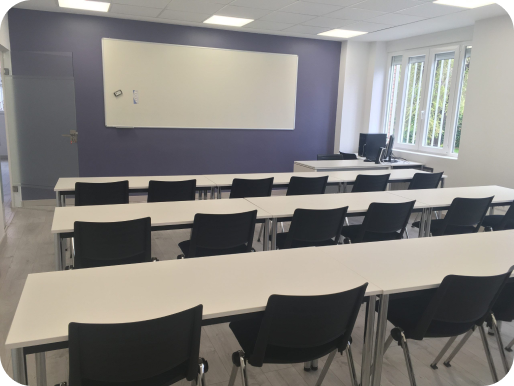

El IES Tetuán de las Victorias se encuentra ubicado en pleno distrito de Tetuán, Madrid, en la Calle de Francos Rodríguez, 2, 28039.
LINK MAPS!!Las Instalaciones del IES TETUAN, aunque tenga bastante historia el centro, se actualizan al nivel de las exigencias actuales del mercado laboral, mas sitios de ocio como terraza exterior y cafetería interna para que el alumno pueda sentirse a gusto en todo momento.

Excelente acceso mediante Metro (línea 1: Estación de Estrecho / Alvarado, y línea 7: Francos Rodríguez) y múltiples líneas de autobús urbano (Líneas 44, 64, 126, 128).
Además de un Parking interno gratuito tanto para el profesorado como el alumnado.